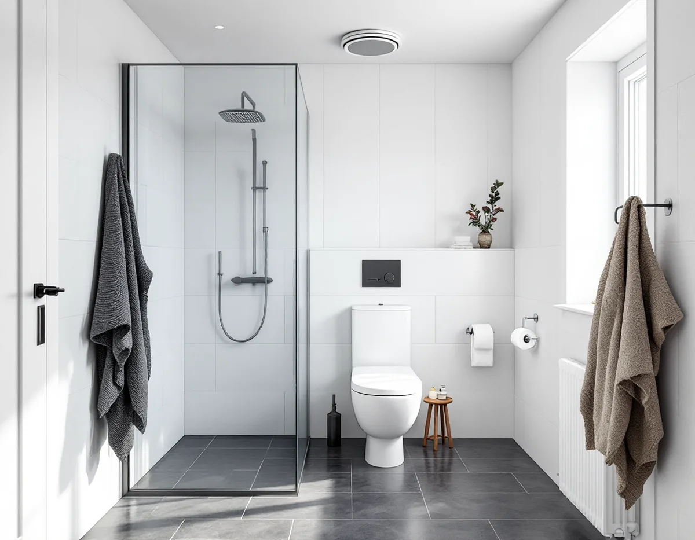
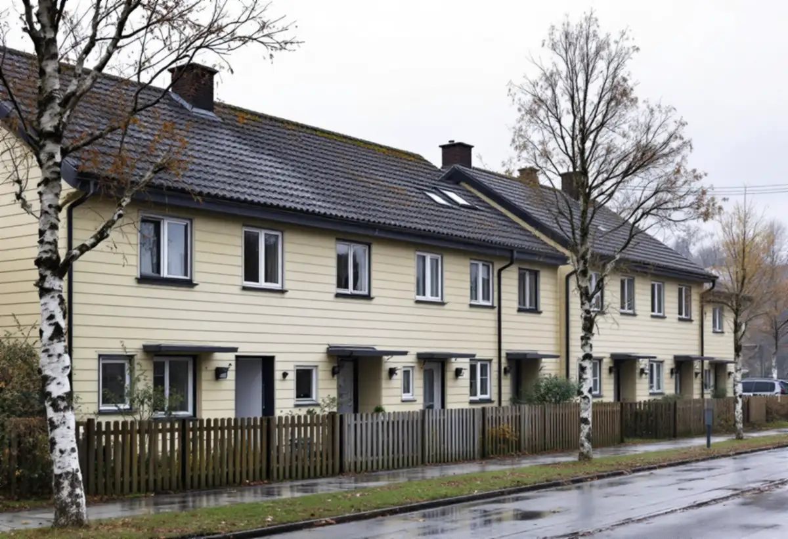

Genomgång i badrummet
Vi testar frånluften, tittar på brunn och rör och frågar hur rummet används.
När ett badrum i Sollentuna ska göras om är det ofta ventilationen och stammarna som avgör hur stort jobbet blir, inte kaklet. Vi river ner till underlaget, bygger tätskikt och ytskikt och samordnar VVS och el – och vi tar reda på vad som behöver anmälas till kommunen innan vi börjar.

Enligt kommunens översiktsplan byggdes järnvägen mellan Stockholm och Uppsala 1866. Rotebro var först den enda stationen, men i början av 1900-talet anlades stationer i Tureberg och Norrviken, och då började man bygga småhus och villor. Kommunen vill bevara den prägel av villastad som växte fram under seklets första hälft, och nämner bland annat Norrvikens villastad, Väderholmen och Skansen.
Efter kriget kom flerbostadshusen, och mellan 1965 och 1975 uppfördes flera miljonprogramsområden. I Sjöberg byggdes villor, radhus och flerbostadshus främst under 70-, 80- och 90-talen. Sollentuna har alltså både sekelskiftesvillor där badrummet byggts in i efterhand och radhus och lägenheter där våtrummet är lika gammalt som huset.
För radhusgrupper skriver översiktsplanen att husen kan förändras, men att varje förändring ska bidra positivt till helheten. Inne i badrummet märks det inte, men ett nytt fönster eller en ny takhuv syns från gatan.

På Sollentuna kommuns sida om ventilation finns några enkla tecken på att luften inte byts som den ska: imman på badrumsspegeln försvinner inte inom 15 minuter efter duschen, det luktar avlopp från frånluftsventilen eller ventilen orkar inte suga fast en pappersbit. Fukt som blir kvar i rummet sliter på fogar, silikon och målade ytor, och i värsta fall på det som sitter bakom.
Bor du i villa råder kommunen dig att ta hjälp av en konsult, och i bostadsrätt ska du kontakta föreningens styrelse. När badrummet ändå rivs är det rätt läge att se över frånluftsdonets placering, att det finns en väg in för ersättningsluft – en spalt under dörren eller ett tilluftsdon – och om fläkten räcker för rummet.
Vill du installera ett nytt ventilationssystem eller göra en större ändring, till exempel byta aggregat, fläkt eller kanaler, ska det enligt kommunen anmälas och du ska vänta på startbesked. Behöver aggregat eller kanaler sitta på fasaden kan det dessutom krävas bygglov.
Sollentuna kommun skriver att du behöver göra en anmälan för vatten och avlopp om ett stambyte påverkar VA-stammar, byggnadens konstruktion eller planlösning, och när du installerar eller gör en större ändring av en anläggning för vattenförsörjning eller avlopp. Med anmälan ska följa en redovisning av VA-anordningarna, plan- och sektionsritningar och ett förslag till kontrollplan. Är arbetet mer omfattande behövs en kontrollansvarig, och berörs bärande konstruktion krävs konstruktionsritningar.
Kommunen anger en handläggningstid på ungefär två till fyra veckor. Den tiden behöver finnas i planeringen om badrummet ska flyttas, få en ny dusch på andra sidan rummet eller byggas om i samband med ett stambyte. Ett badrum som renoveras med samma placering av brunn, toalett och dusch brukar inte kräva någon anmälan alls.
I ett radhus från 70- eller 80-talet är golvbrunnen ofta den del som styr renoveringen. GVK skriver att golvbrunnar från före 1990 ska bytas vid stambyte, vid en påkostad renovering eller efter en större vattenskada. Byts brunnen behöver golvet byggas om runt den, och då görs fallet om samtidigt.
Väggen mot grannen är en annan sak att tänka på. En läcka där drabbar två hus, och rivning hörs genom hela längan. Prata med grannarna i förväg och ta reda på om samfälligheten eller föreningen äger någon del av ledningarna. Mer om metod och papper finns under badrumsrenovering i Stockholm, och om husens tak under takrenovering i Sollentuna.
Vi testar frånluften, tittar på brunn och rör och frågar hur rummet används.
Ändras stammar, planlösning eller ventilation tar vi fram underlag för anmälan.
Arbete och material står på egna rader, så att ROT-avdraget går att räkna ut.
Ytskikt, gamla skivor och brunn tas bort, och underlaget bedöms med rummet öppet.
Installatörerna drar rör och el, frånluften ansluts och sedan byggs fall och tätskikt.
Kakel, klinker och porslin monteras, och du får egenkontroll och skötselråd.
Av arbetskostnaden kan 30 procent dras direkt på fakturan, så länge du har avdrag kvar: högst 50 000 kronor rotavdrag per person och år och högst 75 000 kronor tillsammans med rutavdrag. Material och resor räknas inte.
Bor du i bostadsrätt gäller avdraget arbete inne i lägenheten som du ansvarar för enligt stadgarna. Stambyte och att flytta golvbrunnen räknas där inte, medan byte av golvbrunn och plattsättning gör det.
Om brunnen, toaletten och duschen får ligga kvar blir arbetet mindre än om något flyttas. Ventilationen kan också spela in, liksom underlaget i ett äldre hus och ytskikten du väljer. Vi kommer ut gratis och lämnar ett skriftligt kostnadsförslag.
Tätskikt, golvbrunn, el, VVS och intyg.
Badrumsrenovering i Stockholm →Takbyte, takbesiktning och plåtarbeten.
Takläggare i Sollentuna →Norrviken, Tureberg och Edsberg.
Takrenovering i Sollentuna →Tillbyggnad, tomtdelning och lov.
Byggföretag i Sollentuna →Buller, ljudglas och radhus i Sollentuna.
Fönsterbyte i Sollentuna →Radhus i Sjöberg och villor nära stationerna.
Golvläggare i Sollentuna →Massivt trä eller lamell – vad går att slipa.
Golvslipning i Sollentuna →Villastad och radhuslängor.
Köksrenovering i Sollentuna →Radhusplåt, bleck och rännor i Sollentuna.
Plåtslagare i Sollentuna →Ansökan, solceller och radhus.
Takbyte i Sollentuna →På höjden, nya byggregler och ritningar.
Tillbyggnad i Sollentuna →